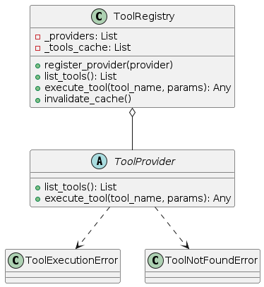
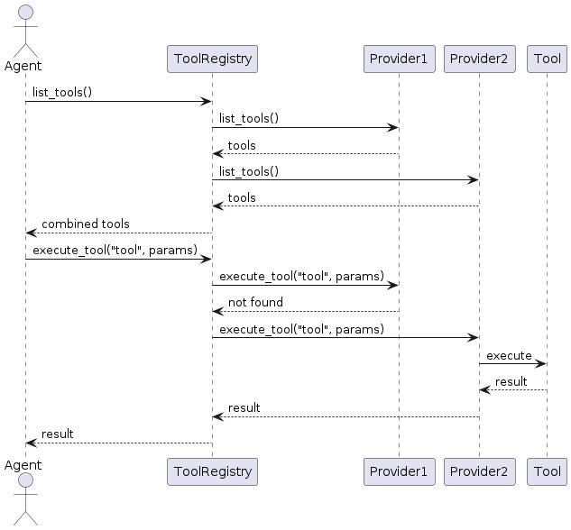

Tool System
The tool system enables agents to interact with external systems, APIs, and capabilities. It provides a unified interface for tool discovery, execution, and management.

Overview
The tool system is designed around these key concepts:
Tool: A function or capability that an agent can use
Tool Provider: A source of tools that can be discovered and executed
Tool Registry: A central registry that manages multiple tool providers
This design allows agents to work with tools from different sources through a consistent interface, whether they’re local functions, remote APIs, or MCP-compatible services.
Core Components
ToolProvider
ToolProvider is the abstract base interface that all tool providers must implement:
list_tools(): Return a list of available tools with metadataexecute_tool(tool_name, params): Execute a tool with the provided parameters
Each tool provider is responsible for managing its own set of tools and handling tool execution.
ToolRegistry
ToolRegistry manages multiple tool providers and provides a unified interface:
register_provider(provider): Add a new tool providerlist_tools(): List all tools from all registered providersexecute_tool(tool_name, params): Execute a tool by nameinvalidate_cache(): Clear the tools cache to refresh available tools
The registry handles routing tool execution requests to the appropriate provider and maintains a cache of available tools for efficiency.
MCPToolProvider
MCPToolProvider is an implementation of ToolProvider that connects to MCP-compatible servers:
Supports the Model Context Protocol for standardized tool interaction
Allows connecting to multiple MCP servers
Handles serialization/deserialization of tool parameters and results
Provides error handling and retry logic
Tool Specifications
Tools are specified with standard metadata:
{
"name": "search",
"description": "Search for information on the web",
"parameters": {
"type": "object",
"properties": {
"query": {
"type": "string",
"description": "The search query"
}
},
"required": ["query"]
}
}
This format is compatible with:
OpenAI Function Calling
Anthropic Tool Use
LangChain Tools
Model Context Protocol
Tool Execution
When a tool is executed:
The agent calls
execute_tool(tool_name, params)The registry routes the request to the appropriate provider
The provider handles parameter validation and execution
The result is returned to the agent
The agent incorporates the result into its reasoning

Implementation Guide
Basic Tools Setup
from agent_patterns.core.tools import ToolRegistry
from langchain.tools import tool
# Define simple tools using LangChain's @tool decorator
@tool
def search(query: str) -> str:
"""Search for information on the web."""
# In a real implementation, this would access a search API
return f"Results for {query}: Some relevant information..."
@tool
def calculator(expression: str) -> str:
"""Calculate a mathematical expression."""
try:
return f"Result: {eval(expression)}"
except Exception as e:
return f"Error: {str(e)}"
# Create a tool registry with these tools
tool_registry = ToolRegistry([search, calculator])
Integrating with Agents
from agent_patterns.patterns import ReActAgent
# Configure the agent with tools
agent = ReActAgent(
llm_configs=llm_configs,
tool_provider=tool_registry
)
# The agent will automatically:
# 1. Discover available tools
# 2. Use tools when appropriate
# 3. Process tool results
result = agent.run("What is 25 * 16?")
Using MCP Tools
from agent_patterns.core.tools.providers.mcp_provider import (
MCPToolProvider,
create_mcp_server_connection
)
# Create MCP server connections
mcp_servers = [
create_mcp_server_connection(
"http",
{"url": "http://localhost:8000/mcp"}
),
create_mcp_server_connection(
"stdio",
{
"command": ["python", "mcp_servers/calculator_server.py"],
"working_dir": "./examples"
}
)
]
# Create MCP tool provider
mcp_provider = MCPToolProvider(mcp_servers)
# Create a registry that combines local and MCP tools
registry = ToolRegistry([search]) # Start with local tool
registry.register_provider(mcp_provider) # Add MCP provider
# Use with agent
agent = ReActAgent(
llm_configs=llm_configs,
tool_provider=registry
)
result = agent.run("Calculate 35 * 12 and search for information about the result.")
Advanced Usage
Custom Tool Provider
from agent_patterns.core.tools.base import ToolProvider, ToolNotFoundError, ToolExecutionError
class MyCustomToolProvider(ToolProvider):
def __init__(self):
self.tools = {
"random_number": {
"name": "random_number",
"description": "Generate a random number in a range",
"parameters": {
"type": "object",
"properties": {
"min": {"type": "number"},
"max": {"type": "number"}
},
"required": ["min", "max"]
}
}
}
def list_tools(self) -> List[Dict[str, Any]]:
return list(self.tools.values())
def execute_tool(self, tool_name: str, params: Dict[str, Any]) -> Any:
if tool_name not in self.tools:
raise ToolNotFoundError(f"Tool '{tool_name}' not found")
if tool_name == "random_number":
try:
import random
min_val = params.get("min", 0)
max_val = params.get("max", 100)
return random.randint(min_val, max_val)
except Exception as e:
raise ToolExecutionError(f"Error executing {tool_name}: {str(e)}")
# Should never get here if tool_name check is comprehensive
raise ToolNotFoundError(f"Tool '{tool_name}' not implemented")
# Use the custom provider
custom_provider = MyCustomToolProvider()
registry = ToolRegistry([custom_provider])
Dynamic Tool Registration
# Create registry
registry = ToolRegistry()
# Register tools dynamically
@tool
def current_time() -> str:
"""Get the current time."""
from datetime import datetime
return datetime.now().strftime("%H:%M:%S")
registry.register_provider(current_time)
# Later add more tools
@tool
def current_date() -> str:
"""Get the current date."""
from datetime import datetime
return datetime.now().strftime("%Y-%m-%d")
registry.register_provider(current_date)
registry.invalidate_cache() # Refresh cache after adding tools
Error Handling
The tool system provides specific exceptions for different error cases:
ToolNotFoundError: When a requested tool doesn’t existToolExecutionError: When tool execution failsMCPConnectionError: When connection to an MCP server failsMCPProtocolError: When there’s an issue with the MCP protocol
Proper handling of these errors allows agents to recover gracefully and try alternative approaches.
Design Considerations
The tool system is designed with these principles:
Extensibility: Easy to add new tool providers
Standardization: Common interface for all tools
Separation of Concerns: Tools, providers, and registry have clear responsibilities
Protocol Compatibility: Works with established standards
Error Resilience: Robust error handling